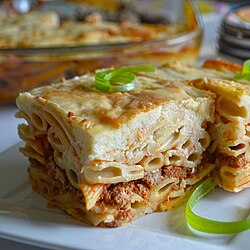

Home
Bechamel

Description
Macarona bil-bechamel is a traditional Egyptian pasta bake that combines penne pasta, a spiced meat sauce, and creamy béchamel sauce. Some versions of this pasta bake involve a cheese top-layer. This casserole is reminiscent of Italian lasagna and Greek pastitsio, likely drawing inspiration from the latter during the early 20th century, when a significant Greek community resided in Egypt
Ingredients
- 500g Pasta
- 400g Ground beef
- 1 Onion
- 2 Garlic
- 1cup Tomato paste
- Oil
- Salt + black pepper
- Bechamel spices
- 4ts Butter
- 4ts Flour
- 1l Milk
- 2 Egg
Steps
- Boil the pasta until it's cooked
- Cook the ground beef with onion, garlic, tomato paste, and spices
- Make the sauce (melt butter -> add flour -> whisk in milk slowly -> season -> thicken -> let it cool -> add the eggs)
- Mix half the sauce with the pasta
- Layer half the pasta then the meat sauce then the rest of the pasta
- Pour the remaining bechamel sauce on top, sprinkle cheese if you want, then bake until it is golden
- Bon Appetite :)